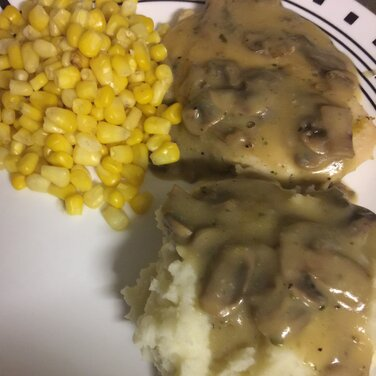

Baked Lemon Chicken with Mushroom Sauce

Description
A great chicken recipe that I have made for years. Serve with rice and a fresh veggie. Impressive!
Ingredients
- 1 tablespoon olive oil
- 6 skinless, boneless chicken breast halves
- 1 lemon
- ¼ cup butter
- 3 cups fresh sliced mushrooms
- 2 tablespoons all-purpose flour
- ½ cup chicken broth, or more as needed
- 1 tablespoon chopped fresh parsley
Steps
- Preheat oven to 400 degrees F (205 degrees C).
- Pour olive oil in an 8x8-inch glass baking dish. Place
the chicken breasts in the dish, coating each side with oil.
Squeeze the juice of 1/2 lemon over each chicken breast.
Slice the rest of the lemon and place a lemon slice on top of
each chicken piece.
- Bake in the preheated oven until no longer pink in the center
and the juices run clear, 30 to 40 minutes. An instant-read
thermometer inserted into the center should read at least 165
degrees F (74 degrees C).
- Melt butter in a skillet over medium heat; add mushrooms.
Cook and stir until mushrooms are brown and liquid is
evaporated, about 6 minutes. Sprinkle flour over mushrooms
and stir until coated. Add chicken broth, stirring to make a
medium-thick sauce. Allow sauce to reduce, adjusting with a
little more broth to make a creamy sauce. Add fresh parsley
at the last minute. Spoon the sauce over the baked chicken
breasts.